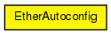

Ethernet model components (EtherMAC, EtherHub and EtherBus) send this message at the beginning of the simulation, so that "auto"-valued "txrate" and "duplex" parameters of EtherMAC can be initialized. The purpose is similar to Ethernet Auto-Negotiation; however this is NOT meant to be the model of that Ethernet feature. (For example, EtherBus also sends an EtherAutoconfig message in the model, which obviously does not happen in a real Ethernet.)
The following diagram shows usage relationships between types. Unresolved types are missing from the diagram.
The following diagram shows inheritance relationships for this type. Unresolved types are missing from the diagram.

| Name | Type | Description |
|---|---|---|
| txrate | double | |
| halfDuplex | bool |
// // Ethernet model components (EtherMAC, EtherHub and EtherBus) send this // message at the beginning of the simulation, so that "auto"-valued "txrate" // and "duplex" parameters of EtherMAC can be initialized. The purpose is // similar to Ethernet Auto-Negotiation; however this is NOT meant to be // the model of that Ethernet feature. (For example, EtherBus also sends // an EtherAutoconfig message in the model, which obviously does not happen in // a real Ethernet.) // // - txrate: EtherMAC with non-auto txrate send configured txrate value; // EtherBus sends 10Mbps (0 means not set). Lowest value will be chosen by // all EtherMACs, or if no txrate was advertised (all were 0), 100Mbps is chosen. // - halfDuplex: EtherHub, EtherBus, plus EtherMAC with duplexEnabled=false setting // send true. Duplex operation only chosen by a MAC if nobody vetoed it by sending // halfDuplex=true. // packet EtherAutoconfig { double txrate = 0; bool halfDuplex = false; }